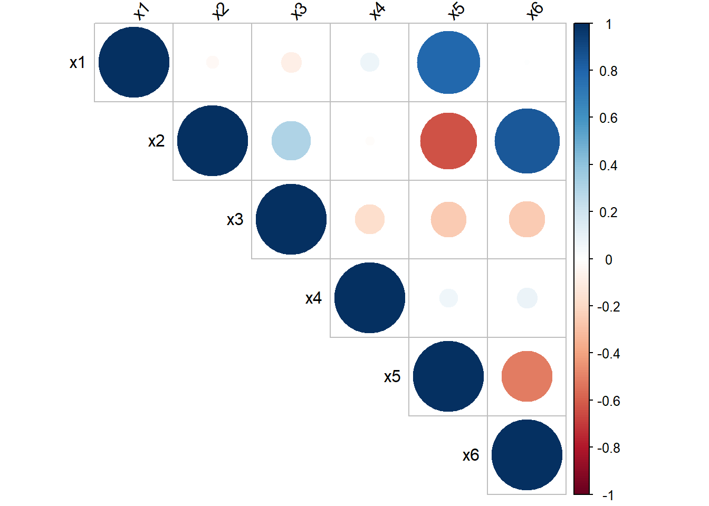

18 Multicolinealidad
En este capítulo se presenta el problema de multicolinealidad y algunas formas de detectarla.
¿Qué es multicolinealidad?
Si no hay relación lineal entre los regresores, se dice que éstos son ortogonales, sin embargo, en la mayor parte de las aplicaciones de regresión los regresores no son ortogonales. A veces no es grave la falta de ortogonalidad, pero en algunos casos, los regresores tienen una relación lineal casi perfecta y las inferencias basadas en el modelo de regresión pueden ser engañosas o erróneas.
Cuando hay dependencias casi lineales entre los regresores, se dice que existe el problema de colinealidad.
Hay cuatro fuentes de multicolinealidad principales:
- El método de recolección de datos que se empleó (subespacios).
- Restricciones en el modelo o en la población (variables correlacionadas de hecho).
- Especificación del modelo (polinomios).
- Un modelo sobredefinido (más variables que observaciones).
¿Cuáles son los problemas de la multicolinealidad?
- Grandes varianzas y covarianzas de los estimadores.
- Estimaciones para los coeficientes demasiado grandes.
- Pequeños cambios en los datos o en la especificación provocan grandes cambios en las estimaciones de los coeficientes.
- La estimaciones de los coeficientes suelen presentar signos distintos a los esperados y magnitudes poco razonables.
Multicolinealidad inducida
La mejor forma de comprender el efecto de la multicolinealidad es crear un conjunto de datos donde exista el problema y ver los efectos que ella tiene.
La función que se muestra a continuación simula datos de un modelo de regresión lineal en el cual la variable \(X_2\) es múltiplo de la variable \(X_1\). El vector de parámetros en la simulación es \(\boldsymbol{\theta}=(-3, 2, -4, \sigma=2)^\top\).
gen_dat <- function(n) {
x1 <- runif(n=n, min=0, max=10)
x2 <- x1 * 2 + rnorm(n=n, sd=0.01) # x2 es el doble de x1 + ruido
y <- rnorm(n=n, mean= - 3 + 2 * x1 - 4 * x2, sd=2)
data.frame(y, x1, x2)
}Vamos a simular dos conjuntos de datos con \(n=20\) observaciones cada uno. Se fija la semilla en el valor 12345 para que usted pueda replicar el ejemplo y obtener los mismo resultados.
Ahora vamos a ajustar un modelo con datos1.
##
## Call:
## stats::lm(formula = y ~ x1 + x2, data = datos1)
##
## Residuals:
## Min 1Q Median 3Q Max
## -3.9549 -1.7802 0.5549 1.5669 4.0319
##
## Coefficients:
## Estimate Std. Error t value Pr(>|t|)
## (Intercept) -1.560 1.135 -1.374 0.187
## x1 100.994 94.085 1.073 0.298
## x2 -53.574 47.073 -1.138 0.271
##
## Residual standard error: 2.341 on 17 degrees of freedom
## Multiple R-squared: 0.9864, Adjusted R-squared: 0.9848
## F-statistic: 617.5 on 2 and 17 DF, p-value: < 2.2e-16Ahora los resultados con el segundo conjunto de datos.
##
## Call:
## stats::lm(formula = y ~ x1 + x2, data = datos2)
##
## Residuals:
## Min 1Q Median 3Q Max
## -2.7246 -1.8012 0.2883 1.2949 3.9046
##
## Coefficients:
## Estimate Std. Error t value Pr(>|t|)
## (Intercept) -2.402 1.140 -2.107 0.0503 .
## x1 -36.608 81.561 -0.449 0.6592
## x2 15.323 40.776 0.376 0.7117
## ---
## Signif. codes: 0 '***' 0.001 '**' 0.01 '*' 0.05 '.' 0.1 ' ' 1
##
## Residual standard error: 2.303 on 17 degrees of freedom
## Multiple R-squared: 0.9819, Adjusted R-squared: 0.9798
## F-statistic: 461.3 on 2 and 17 DF, p-value: 1.545e-15Al observar las salidas anterior se tiene que \(\hat{\boldsymbol{\theta}}_1=(-1.56, 100.99, -53.57, 2.34)^\top\) y que \(\hat{\boldsymbol{\theta}}_2=(-2.40, -36.31, 15.32, 2.30)^\top\). Al comparar con el vector verdadero \(\boldsymbol{\theta}=(-3, 2, -4, \sigma=2)^\top\) se observa que las estimaciones son muy diferentes.
De las tablas de resumen también se observa que los errores estándar son muy grandes y por lo tanto los resultados de las pruebas de hipótesis individuales (\(H_0: \beta_j=0\) vs \(H_A: \beta_j \neq 0\)) no se rechaza \(H_0\) por los valores-P grandes.
De las tablas de resumen se observan \(R^2_{Adj}\) grandes, ¿qué opina de esto.
stats::lm para indicar que queremos la función lm usual del paquete stats.

Matriz de correlaciones
Una primera aproximación consiste en obtener los coeficientes de correlación muestral simples para cada par de variables explicativas y ver si el grado de correlación entre estas variables es alto.
Ejemplo
Usando la base de datos mtcars explore las variables que están fuertemente correlacionadas.
Solución
Primero exploremos la base de datos.
## Rows: 32
## Columns: 11
## $ mpg <dbl> 21.0, 21.0, 22.8, 21.4, 18.7, 18.1, 14.3, 24.4, 22.8, 19.2, 17.8,…
## $ cyl <dbl> 6, 6, 4, 6, 8, 6, 8, 4, 4, 6, 6, 8, 8, 8, 8, 8, 8, 4, 4, 4, 4, 8,…
## $ disp <dbl> 160.0, 160.0, 108.0, 258.0, 360.0, 225.0, 360.0, 146.7, 140.8, 16…
## $ hp <dbl> 110, 110, 93, 110, 175, 105, 245, 62, 95, 123, 123, 180, 180, 180…
## $ drat <dbl> 3.90, 3.90, 3.85, 3.08, 3.15, 2.76, 3.21, 3.69, 3.92, 3.92, 3.92,…
## $ wt <dbl> 2.620, 2.875, 2.320, 3.215, 3.440, 3.460, 3.570, 3.190, 3.150, 3.…
## $ qsec <dbl> 16.46, 17.02, 18.61, 19.44, 17.02, 20.22, 15.84, 20.00, 22.90, 18…
## $ vs <dbl> 0, 0, 1, 1, 0, 1, 0, 1, 1, 1, 1, 0, 0, 0, 0, 0, 0, 1, 1, 1, 1, 0,…
## $ am <dbl> 1, 1, 1, 0, 0, 0, 0, 0, 0, 0, 0, 0, 0, 0, 0, 0, 0, 1, 1, 1, 0, 0,…
## $ gear <dbl> 4, 4, 4, 3, 3, 3, 3, 4, 4, 4, 4, 3, 3, 3, 3, 3, 3, 4, 4, 4, 3, 3,…
## $ carb <dbl> 4, 4, 1, 1, 2, 1, 4, 2, 2, 4, 4, 3, 3, 3, 4, 4, 4, 1, 2, 1, 1, 2,…Ahora vamos a calcular la matriz de correlaciones.
## mpg cyl disp hp drat wt qsec vs am gear carb
## mpg 1.00 -0.85 -0.85 -0.78 0.68 -0.87 0.42 0.66 0.60 0.48 -0.55
## cyl -0.85 1.00 0.90 0.83 -0.70 0.78 -0.59 -0.81 -0.52 -0.49 0.53
## disp -0.85 0.90 1.00 0.79 -0.71 0.89 -0.43 -0.71 -0.59 -0.56 0.39
## hp -0.78 0.83 0.79 1.00 -0.45 0.66 -0.71 -0.72 -0.24 -0.13 0.75
## drat 0.68 -0.70 -0.71 -0.45 1.00 -0.71 0.09 0.44 0.71 0.70 -0.09
## wt -0.87 0.78 0.89 0.66 -0.71 1.00 -0.17 -0.55 -0.69 -0.58 0.43
## qsec 0.42 -0.59 -0.43 -0.71 0.09 -0.17 1.00 0.74 -0.23 -0.21 -0.66
## vs 0.66 -0.81 -0.71 -0.72 0.44 -0.55 0.74 1.00 0.17 0.21 -0.57
## am 0.60 -0.52 -0.59 -0.24 0.71 -0.69 -0.23 0.17 1.00 0.79 0.06
## gear 0.48 -0.49 -0.56 -0.13 0.70 -0.58 -0.21 0.21 0.79 1.00 0.27
## carb -0.55 0.53 0.39 0.75 -0.09 0.43 -0.66 -0.57 0.06 0.27 1.00Mirar la matriz para encontrar las variables que tienen mayor correlación (positiva o negativa) es difícil, lo mejor es usar herramientas gráficas.
## corrplot 0.92 loadedCombinando los resultados de la matriz anterior y el conocimiento de las variables es posible identificar variables que podrían generar el problema de multicolinealidad.
Factor de Inflación de la Varianza (VIF)
El Factor de Inflación de la Varianza se define así:
\[ VIF = \frac{1}{1 - {R}^{2}_{k}}, \]
siendo \(R^2_k\) el coeficiente de determinación de la regresión auxiliar de la varaible \(X_k\) sobre el resto de las variables explicativas. El \(VIF\) toma valores entre 1 e \(\infty\).
El \(VIF\) para cada término del modelo mide el efecto combinado que tienen las dependencias entre los regresores sobre la varianza de ese término. Si hay uno o más \(VIF\) grandes, hay multicolinealidad. La experiencia indica que si cualquiera de los \(VIF\) es mayor que 5 o 10, es indicio de que los coeficientes asociados de regresión están mal estimados debido a la multicolinealidad (E. &. V. Montgomery D. & Peck 2006). La regla de decisión se puede resumir así:
- Si \(\text{VIF} \leq 5\) no hay problemas de multicolinealidad.
- Si \(5 < \text{VIF} \leq 10\) hay problemas de multicolinealidad moderada.
- Si \(\text{VIF} > 10\) hay problemas de multicolinealidad graves.
Ejemplo
Simular un conjunto de datos en el cual existan variables que sean combinación lineal de otras variables. Usar el \(VIF\) para identificar las posibles variables colineales y luego comprobar los resultados con la matriz de correlaciones.
Solución
Vamos a crear una función para generar datos de un modelo lineal donde algunas de las variables que son combinación de otras. Mire el siguiente código e identifique las líneas donde se indujo la colinealidad.
gen_dat <- function(n) {
x1 <- sample(5:25, size=n, replace=TRUE)
x2 <- rpois(n, lambda=5)
x3 <- rbinom(n, size=10, prob=0.4)
x4 <- rbeta(n=n, shape1=0.5, shape2=0.7)
ruido1 <- runif(n=n, min=-0.5, max=0.5)
ruido2 <- runif(n=n, min=-0.5, max=0.5)
x5 <- 2 * x1 - 3 * x2 + ruido1
x6 <- 3* x2 - 4 * x3 + ruido2
y <- rnorm(n=n, mean= - 3 + 2 * x1 - 4 * x2, sd=2)
data.frame(y, x1, x2, x3, x4, x5, x6)
}Ahora vamos a generar una base de datos, luego vamos a ajustar el un modelo de regresión para explicar la media de la variable \(Y\) en función de las otras variables y por último vamos a calcular los \(VIF\) para cada variable explicativa usando la función vif de paquete car creado por John Fox, Weisberg, and Price (2023).
## x1 x2 x3 x4 x5 x6
## 2179.55685 2093.65153 298.35108 1.05934 3675.23843 920.11083De la salida anterior vemos que los \(VIF\) de todas las variables, excepto \(X_4\), son muy grandes, eso indica que hay un problema de colinealidad entre esas variables.
El \(VIF\) para la variable \(X_4\) fue pequeño porque en la generación de los datos esa variable no tuvo nada que ver con las restantes.
Vamos ahora a dibujar la matriz de correlaciones de Pearson así:
mat_cor <- cor(datos[, -1])
library(corrplot)
corrplot(mat_cor, type="upper", tl.col="black", tl.srt=45)
De la figura anterior se puede ver que las variables \(X_5\), \(X_1\), \(X_2\), \(X_6\) y \(X_3\) son las que presentan mayores correlaciones absolutas entre ellas. La variable \(X_4\) no muestra correlación con ninguna de las otras covariables.
Análisis de los valores propios de \(\mathbf{X}^\top\mathbf{X}\)
Número de condición
Mide la dispersión en el espectro de los valores propios de la matriz \(\mathbf{X}^\top\mathbf{X}\). Se calcula como: \(\kappa = \lambda_{\max} / \lambda_{\min}\).
- Si \(\sqrt{\kappa} \leq 10\) no hay problemas de multicolinealidad.
- Si \(10 < \sqrt{\kappa} \leq 31.62\) hay problemas de multicolinealidad moderada.
- Si \(\sqrt{\kappa} > 31.62\) hay problemas de multicolinealidad graves.
Ejemplo
Considere los datos del ejemplo anterior y calcule \(\sqrt{\kappa}\).
Solución
En el modelo ajustado mod está la matriz \(\mathbf{X}\) que nos permite obtener \(\sqrt{\kappa}\). A continuación el código a usar.
## [1] 472.4536De la salida anterior vemos que \(\sqrt{\kappa}\) es muy pero muy grande, eso significa que hay problemas de multicolinealidad, como era de esperarse.
Índice de condición
Es una medida útil para determinar el número de dependencias casi lineales en \(\mathbf{X}^\top\mathbf{X}\). Se calcula como: \(\kappa_j = \lambda_{\max} / \lambda_j,\ j = 1, \ldots, p\). El criterio para detectar multicolinealidad es:
- Si \(\sqrt{\kappa_j} \leq 10\ \forall j\), no hay problemas de multicolinealidad.
- Si al menos para un \(j\), \(10 < \sqrt{\kappa_j} \leq 31.62\), entonces hay problemas de multicolinealidad moderada.
- Si al menos para un \(j\), \(\sqrt{\kappa_j} > 31.62\), entonces hay problemas de multicolinealidad graves ().
Ejemplo
Considere los datos del ejemplo anterior y calcule \(\sqrt{\kappa_j}\).
Solución
En el modelo ajustado mod está la matriz \(\mathbf{X}\) que nos permite obtener \(\sqrt{\kappa_j}\). A continuación el código a usar.
## [1] 1.000000 2.129467 4.975017 70.662683 116.906646 306.561681 472.453635De la salida anterior vemos que \(\sqrt{\kappa_j}\) es muy pero muy grande, eso significa que hay problemas de multicolinealidad, como era de esperarse.